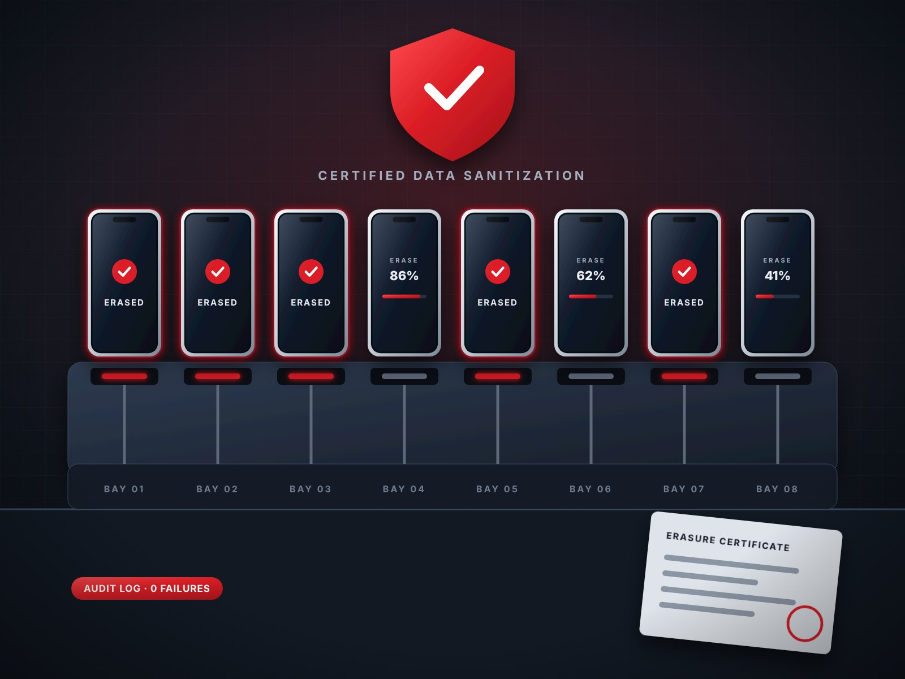

Get more devices back to market, at a higher grade.
Refurbishment is where recovered value is won or lost. We design and stand up refurbishment and device-processing programs that test, grade, clear, and repair units consistently, then route each one to its best next life.

photos/refurb-bench.jpg or .pngRefurbishment designed to perform at real volume
A refurbishment program only works if it holds up at volume. We design the flow from intake through diagnostics, repair, cosmetic restoration, and final quality checks, then set up the device-processing, 3PL, and repair partners to run it.
The goal is simple: fewer units written down, faster turns, and refurbished product that buyers trust.
Every stage is a chance to protect value
Intake & triage
Units are logged, identified, and sorted by condition and opportunity.
Testing & grading
Consistent diagnostics and grading standards, so value isn’t lost to guesswork.
Data sanitization
Data is securely cleared and documented before any unit moves on.
Repair & refurbish
Targeted repair and cosmetic work where the price difference justifies it.
Next life
Resale, redeployment, parts harvesting, or responsible recycling.

photos/refurb-data-security.jpg or .pngA chain of custody you can stand behind
Every recovered device can carry someone else’s data. We build ITAD and refurbishment programs with security designed in from the start: controlled handling, chain-of-custody tracking, and verified data sanitization through qualified partners and tools.
- Chain-of-custody tracking from intake to final disposition
- Verified data sanitization with documented results
- Qualified ITAD and recycling partners for end-of-life units
- Audit-ready records for enterprise and carrier requirements
What a well-run refurbishment program delivers
Higher recovery
More units sold as refurbished instead of written down as parts.
Faster turns
Less time from intake to sale means less value lost to aging.
Lower risk
Documented data handling protects your customers and your brand.
Circular by design
Longer device lives and less waste, without giving up margin.
Let’s build a refurbishment program that holds up at volume.
Whether you’re starting from scratch or fixing a program that isn’t delivering, we’ll help you design it, line up the right partners, and get it running.
- Program design and setup
- Partner and facility sourcing
- Grading and QA standards
- Launch and ramp support